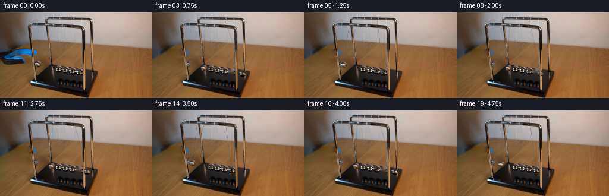
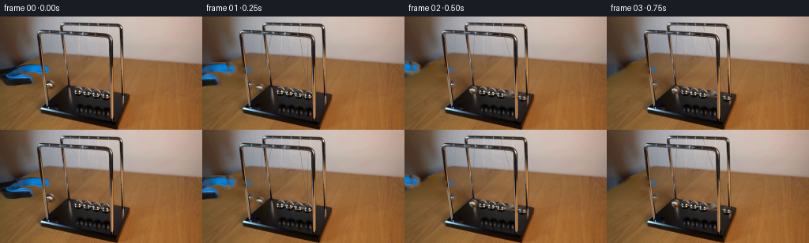
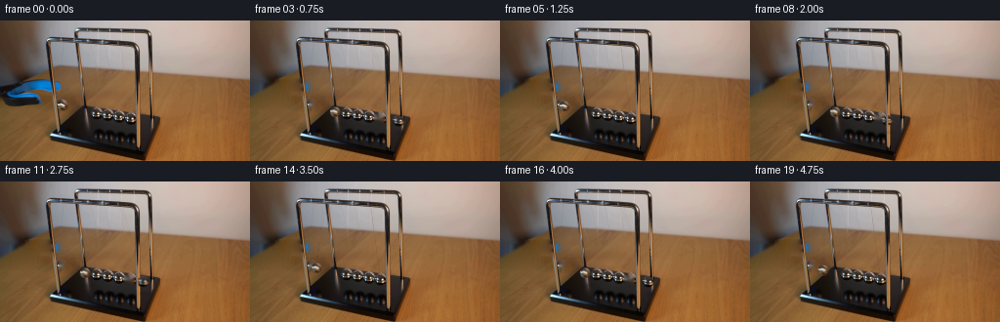
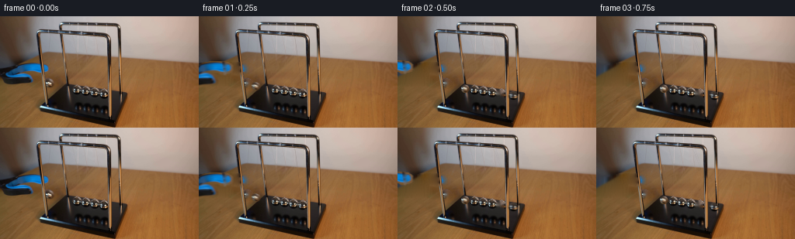

CODING AGENTS AS PIXEL WORLD MODELS
traex/GPT-6.1-Sol · 0162
点击播放 · 原生 RGB 像素
逐轮保存的候选
回放视频、检查图与代码变化。
每份候选均可单独播放。实际图片检查记录在下方工具轨迹中。
候选 01播放与检查图
点击播放 · 原生 RGB 像素


展开代码变化
--- 上一保存版本
+++ 本次保存版本
@@ -0,0 +1,192 @@
+from pathlib import Path
+import numpy as np
+from PIL import Image, ImageDraw
+import cv2
+from scipy.ndimage import gaussian_filter, distance_transform_edt, map_coordinates
+from scipy.sparse import coo_matrix
+from scipy.sparse.linalg import spsolve
+import artifact_io
+
+ROOT=Path(__file__).resolve().parent
+H,W=144,256
+Y,X=np.mgrid[:H,:W].astype(float)
+
+def polygon(points):
+ im=Image.new('L',(W,H));ImageDraw.Draw(im).polygon(points,fill=255)
+ return np.asarray(im)/255.
+
+def segment_mask(a,b,width):
+ ax,ay=a;bx,by=b
+ z=np.clip(((X-ax)*(bx-ax)+(Y-ay)*(by-ay))/((bx-ax)**2+(by-ay)**2),0,1)
+ return np.clip(width+.5-np.sqrt((X-ax-z*(bx-ax))**2+(Y-ay-z*(by-ay))**2),0,1)
+
+def ellipse_mask(cx,cy,rx,ry):
+ rho=np.sqrt(((X-cx)/rx)**2+((Y-cy)/ry)**2)
+ return np.clip((1-rho)*min(rx,ry)+.55,0,1)
+
+
+def harmonic_fill(im,mask,guide=None):
+ # Dirichlet interpolation, with photographic surface detail rather than a flat fill.
+ unknown=mask>0
+ yy,xx=np.where(unknown)
+ ids=np.full((H,W),-1,int);ids[yy,xx]=np.arange(len(xx))
+ rows=[];cols=[];vals=[]
+ rhs=np.zeros((len(xx),3),float)
+ if guide is None:guide=np.zeros_like(im)
+ for k,(y,x) in enumerate(zip(yy,xx)):
+ deg=0
+ for dy,dx in ((0,1),(0,-1),(1,0),(-1,0)):
+ ny,nx=y+dy,x+dx
+ if 0<=ny<H and 0<=nx<W:
+ deg+=1
+ rhs[k]+=guide[y,x]-guide[ny,nx]
+ if unknown[ny,nx]:rows.append(k);cols.append(ids[ny,nx]);vals.append(-1.)
+ else:rhs[k]+=im[ny,nx]
+ rows.append(k);cols.append(k);vals.append(float(deg))
+ mat=coo_matrix((vals,(rows,cols)),shape=(len(xx),len(xx))).tocsr()
+ out=im.copy();out[yy,xx]=spsolve(mat,rhs)
+ return out
+
+
+def setup(original):
+ upper=polygon([(0,65),(10,64),(18,63),(28,61),(35,60),(48,60),(53,60),(58,61),(61,63),(63,65),(63,70),(62,72),(59,73),(54,74),(50,74),(46,72),(43,72),(37,72),(31,73),(25,74),(21,77),(13,79),(0,81)])
+ lower=polygon([(0,73),(7,73),(14,75),(21,75),(26,73),(33,73),(38,74),(41,76),(43,79),(44,83),(43,86),(40,87),(33,88),(22,89),(13,88),(6,87),(0,85)])
+ full=(upper+lower)>0
+ # The left chrome upright occludes the blue jaws.
+ post=segment_mask((49.5,22),(61.1,113),1.9)
+ post2=segment_mask((135.1,31),(140.3,116.6),1.6)
+ allpost=np.maximum(post,post2)
+ # Segmentation by RGB supplements the hand-traced silhouette at the small jaw tips.
+ blue=(original[:,:,2]>original[:,:,0]+12)&(original[:,:,2]>original[:,:,1]+8)&(X<66)&(Y>=60)&(Y<90)
+ full=full|blue
+ full=cv2.dilate(full.astype(np.uint8),np.ones((3,3),np.uint8))>0
+ # Construct the wall/table corner exposed as the tool withdraws.
+ # The table's left back edge runs diagonally down to the left of the picture.
+ edge=np.maximum(77.5-.56*X,42.5+.066*X)
+ tablemix=1/(1+np.exp(-(Y-edge)/.9))
+ # Photometric reconstruction of the warm wooden tabletop, fitted only to visible wood.
+ wood=(X<84)&(Y>48)&(Y<110)&(Y>edge+4)&(~full)&(post<.02)&(X<71)
+ wood &= ~(((X-63.4)**2+(Y-86.8)**2)<64)
+ wood &= Y < 113-.28*X
+ features=np.stack([np.ones_like(X),X/80,(Y-75)/40,(X/80)**2,((Y-75)/40)**2,X*(Y-75)/3200],-1)
+ coefs=np.linalg.lstsq(features[wood],original[wood],rcond=None)[0]
+ table=features@coefs
+ # Continue the dark background just above the diagonal edge.
+ wall=np.empty_like(original)
+ for x in range(85):
+ top=int(np.clip(edge[0,x]-11,35,61))
+ ys=np.arange(max(30,top-12),top+1)
+ # The known wall samples are above the tool and above the tabletop.
+ vals=original[ys,x]
+ A=np.stack([np.ones(len(ys)),ys-top],1)
+ coeff=np.linalg.lstsq(A,vals,rcond=None)[0]
+ wall[:,x]=coeff[0]+(np.arange(H)-top)[:,None]*coeff[1]
+ wall[:,85:]=original[:,85:]
+ wall=np.clip(wall,15,225)
+ guide=wall*(1-tablemix[...,None])+table*tablemix[...,None]
+ # Borrow only high-frequency grain from the same tabletop in the supplied frame.
+ grain=original-gaussian_filter(original,(1.2,1.2,0))
+ texture=grain[(Y.astype(int)+7)%40+73,(X.astype(int)+18)%61+169]
+ guide+=texture*.55*tablemix[...,None]
+ erase=full & (post<.62)
+ clean=harmonic_fill(original,erase.astype(np.uint8),guide)
+ # Very narrow residual edges fade into their original neighborhood.
+ # Remove the released sphere from its held position, and the opposite moving sphere.
+ held_center=(63.4,86.65);end_center=(132.6,100.6)
+ left_erase=ellipse_mask(*held_center,5.65,5.65)>.02
+ left_erase &= post<.55
+ right_erase=ellipse_mask(*end_center,6.15,5.9)>.02
+ right_erase &= post2<.3
+ clean=cv2.inpaint(np.clip(clean,0,255).astype(np.uint8),(left_erase|right_erase).astype(np.uint8)*255,3,cv2.INPAINT_TELEA).astype(float)
+ # Reconstruct the portion of the blue tool originally hidden by the upright.
+ toolrgb=cv2.inpaint(original.astype(np.uint8),((post>.1)&full).astype(np.uint8)*255,3,cv2.INPAINT_TELEA).astype(float)
+ # A subpixel matte retains the photographic antialiasing and grain.
+ toolalpha=gaussian_filter(full.astype(float),.38)
+ toolalpha=np.clip(toolalpha,0,1)
+ return clean,toolrgb,toolalpha,allpost,held_center,end_center,guide
+
+
+def draw_wire(im,pivot,ball,width=.30):
+ # Fine, dim metallic suspension threads, soft enough for this camera resolution.
+ bx,by=ball
+ stop=(bx,by-4.7)
+ a=segment_mask(pivot,stop,width)*.45
+ # The back/front string remains visible on both wall and table without being black.
+ wire=np.array([71.,69.,64.])
+ return im*(1-a[...,None])+wire*a[...,None]
+
+
+def add_ball(im,original,source,center,rx,ry,angle=0):
+ cx,cy=center;sx,sy=source
+ # Preserve the original chrome reflections. Their slight change follows the moving sphere.
+ u=(X-cx);v=(Y-cy)
+ r=np.sqrt((u/rx)**2+(v/ry)**2)
+ alpha=np.clip((1-r)*min(rx,ry)+.48,0,1)
+ u0=u*np.cos(angle)-v*np.sin(angle)
+ v0=u*np.sin(angle)+v*np.cos(angle)
+ coords=[sy+v0,sx+u0]
+ rgb=np.stack([map_coordinates(original[:,:,k],coords,order=1,mode='nearest') for k in range(3)],-1)
+ # Dark thin rim and original bright reflected stripes, not flat painted circles.
+ return im*(1-alpha[...,None])+rgb*alpha[...,None]
+
+
+def generate():
+ original=np.asarray(Image.open(ROOT/'first_frame.png').convert('RGB')).astype(float)
+ clean,tool,ta,posts,held,right_source,guide=setup(original)
+ left_rest=np.array([86.65,93.25]);right_rest=np.array(right_source)
+ amp_angle=np.arcsin((left_rest[0]-held[0])/76.)
+ period=1.13
+ def pos(rest,theta):
+ h=76*np.sin(theta)
+ return rest+np.array([h,.182*h-.61*76*(1-np.cos(theta))])
+ def image_at(t):
+ out=clean.copy()
+ # Equal-mass nearly elastic impacts transfer velocity from one end to the other.
+ # The middle three spheres never make a collective swing.
+ damping=np.exp(-.056*t)
+ phi=2*np.pi*max(t-.08,0)/period
+ thL=-amp_angle*damping*max(np.cos(phi),0)
+ thR= amp_angle*damping*max(-np.cos(phi),0)
+ left=pos(left_rest,thL);right=pos(right_rest,thR)
+ # Two suspended threads per moving ball, attached to the original top rails.
+ out=draw_wire(out,(76.2,10.5),left,.20)
+ out=draw_wire(out,(87.7,21.1),left,.23)
+ out=draw_wire(out,(121.5,11.3),right,.18)
+ out=draw_wire(out,(133.8,24.2),right,.22)
+ # The upper sections of the rails and upright are in front of the threads.
+ moving_area=(Y>26)&(Y<114)
+ # Subtle moving cast shadows on the black plinth and the wooden surface beyond it.
+ for c,rest in [(left,left_rest),(right,right_rest)]:
+ sh=np.exp(-((X-(c[0]+2.8))/5.7)**2-((Y-(c[1]+12.1))/2.1)**2)*.12
+ sh*=np.clip((Y-100)/6,0,1)
+ out*=1-sh[...,None]
+ out=add_ball(out,original,held,left,5.35,5.3,.035*np.sin(phi))
+ out=add_ball(out,original,right_source,right,5.9,5.5,.025*np.sin(phi))
+ # Release, open the jaws slightly, and withdraw the grabber out to the left.
+ if t<1.12:
+ travel=78*np.clip((t-.08)/.8,0,1)**.85
+ dy=-4*np.clip((t-.08)/.8,0,1)
+ # Lower jaw opens by a few pixels at the release before the tool leaves.
+ openjaw=2.1*np.clip(t/.22,0,1)
+ srcy=Y-dy-openjaw*np.clip((Y-72)/7,0,1)
+ srcx=X+travel
+ alpha=map_coordinates(ta,[srcy,srcx],order=1,mode='constant',cval=0)
+ rgb=np.stack([map_coordinates(tool[:,:,k],[srcy,srcx],order=1,mode='constant',cval=0) for k in range(3)],-1)
+ out=out*(1-alpha[...,None])+rgb*alpha[...,None]
+ # Original front posts occlude the moving objects. Keep exactly the original lighting.
+ pm=posts*moving_area
+ out=out*(1-pm[...,None])+original*pm[...,None]
+ return np.clip(out,0,255)
+ frames=[original.astype(np.uint8)]
+ for i in range(1,20):
+ t=i/4.
+ # Short exposure, locked camera; no frame interpolation or artificial camera movement.
+ subs=[image_at(t+d) for d in [-.010,0,.010]]
+ frames.append(np.rint(np.mean(subs,axis=0)).astype(np.uint8))
+ frames=np.stack(frames)
+ artifact_io.save(frames,ROOT)
+ np.save(ROOT/'.tmp/clean.npy',clean)
+ Image.fromarray(np.clip(clean,0,255).astype(np.uint8)).save(ROOT/'.tmp/background.png')
+ print('Saved',frames.shape,frames.dtype)
+
+if __name__=='__main__':generate()
候选 02播放与检查图
点击播放 · 原生 RGB 像素


展开代码变化
--- 上一保存版本
+++ 本次保存版本
@@ -110,9 +110,9 @@
# Fine, dim metallic suspension threads, soft enough for this camera resolution.
bx,by=ball
stop=(bx,by-4.7)
- a=segment_mask(pivot,stop,width)*.45
+ a=segment_mask(pivot,stop,width)*.24
# The back/front string remains visible on both wall and table without being black.
- wire=np.array([71.,69.,64.])
+ wire=im*.73+np.array([6.,7.,8.])
return im*(1-a[...,None])+wire*a[...,None]
@@ -150,9 +150,9 @@
left=pos(left_rest,thL);right=pos(right_rest,thR)
# Two suspended threads per moving ball, attached to the original top rails.
out=draw_wire(out,(76.2,10.5),left,.20)
- out=draw_wire(out,(87.7,21.1),left,.23)
+ out=draw_wire(out,(78.0,21.1),left,.23)
out=draw_wire(out,(121.5,11.3),right,.18)
- out=draw_wire(out,(133.8,24.2),right,.22)
+ out=draw_wire(out,(123.0,24.2),right,.22)
# The upper sections of the rails and upright are in front of the threads.
moving_area=(Y>26)&(Y<114)
# Subtle moving cast shadows on the black plinth and the wooden surface beyond it.
可观测工具轨迹
实际执行的命令与返回图片。
命令 1exit 0
/bin/bash -lc 'ls -la && cat prompt.txt && cat GENERATION_RULES.md'
命令 2exit 0
/bin/bash -lc "cat artifact_io.py && python - <<'PY'
from PIL import Image
import numpy as np
im=np.array(Image.open('first_frame.png'));print(im.shape)
for y in range(0,144,3):
row=''
for x in range(0,256,3):
r,g,b=im[y:y+3,x:x+3].mean((0,1))
v=(r+g+b)/3
c=' '
if v<30:c='@'
elif v<60:c='#'
elif v<90:c='O'
elif v<120:c='o'
elif v<150:c='*'
elif v<180:c=':'
elif v<210:c='.'
elif v<235:c='-'
row+=c
print(f'{y:3} '+row)
PY"命令 3exit 0
/bin/bash -lc "python - <<'PY'
from PIL import Image
import numpy as np
im=np.array(Image.open('first_frame.png'))
for xy in [(0,0),(100,0),(200,0),(200,80),(80,70),(30,78),(30,83),(61,82),(62,89),(75,91),(85,94),(100,100),(135,118)]: print(xy,im[xy[1],xy[0]])
# ASCII all pixels crop with perceptual luminance
v=im.mean(2)
chars='@%#*+=-:. '
for bounds in [(35,65,133,108),(0,62,72,94),(70,6,155,35)]:
x0,y0,x1,y1=bounds
print('\\n',bounds,'\\n x', ''.join(str(x//10%10) for x in range(x0,x1)))
print(' '+''.join(str(x%10) for x in range(x0,x1)))
for y in range(y0,y1):print(f'{y:3}', ''.join(chars[min(9,int(v[y,x]*10/256))] for x in range(x0,x1)))
PY"命令 4exit 0
/bin/bash -lc "python - <<'PY'
from PIL import Image
import numpy as np
im=np.array(Image.open('first_frame.png'))
for bounds in [(0,60,85,91),(52,76,133,106),(45,18,137,83)]:
x0,y0,x1,y1=bounds
print('\\n',bounds)
for y in range(y0,y1):
out=''
for x in range(x0,x1):
r,g,b=map(int,im[y,x]);v=(r+g+b)/3
if b>r+10 and b>g+5:c='B' if b>80 else 'b'
elif max(r,g,b)-min(r,g,b)<16:c='@' if v<25 else '#' if v<65 else '=' if v<115 else '+' if v<165 else '.' if v<210 else 'W'
else:c='K' if v<30 else 'k' if v<60 else 't' if v<100 else 'T' if v<135 else 'o' if v<170 else '-' if v<205 else ':'
out+=c
print(f'{y:3} {out}')
# whiteness maxima clusters near balls
for y in range(80,104):
print(y, [(x,im[y,x].tolist()) for x in range(55,134) if im[y,x].min()>110 and im[y,x].max()-im[y,x].min()<35])
PY"命令 5exit 0
/bin/bash -lc "python - <<'PY'
import importlib.util
for p in ['cv2','scipy','numpy','PIL']: print(p,bool(importlib.util.find_spec(p)))
from PIL import Image
import numpy as np
from scipy.ndimage import gaussian_filter
im=np.array(Image.open('first_frame.png')).astype(float)
v=im.mean(2);res=v-gaussian_filter(v,2)
# print detail line contrasts subsampled horizontal 1 vertical 2
for y in range(26,82,2):
out=''
for x in range(58,142):
z=res[y,x]
out+='@' if z<-22 else '#' if z<-12 else '-' if z<-5 else ' ' if z<4 else '.' if z<10 else '+' if z<18 else '*'
print(f'{y:3} {out}')
# balls detailed luminance
for y in range(81,105):
print(f'{y:3}', ' '.join(f'{int(v[y,x]):3}' for x in range(58,73)))
PY"命令 6exit 0
/bin/bash -lc "python - <<'PY'
import numpy as np
from PIL import Image
im=np.array(Image.open('first_frame.png'));v=im.mean(2)
# entire left tool with x 20-85, y45-91
chs='@%#*+=-:. '
for y in range(43,93):
print(f'{y:3}', ''.join(chs[min(9,int(v[y,x]/25.6))] for x in range(0,86)))
# Print bright ball positions at tool tip
print('RGB ball region')
for y in range(80,91):print(y,' '.join(f'{x}:{tuple(im[y,x])}' for x in range(58,70)))
PY"命令 7exit 0
/bin/bash -lc "python - <<'PY'
from PIL import Image
import numpy as np
im=np.array(Image.open('first_frame.png'));v=im.mean(2)
chars='@%#*+=-:. '
print(' '+''.join(str(x//10%10) for x in range(80,145)))
print(' '+''.join(str(x%10) for x in range(80,145)))
for y in range(84,108):print(f'{y:3}', ''.join(chars[min(9,int(v[y,x]*10/256))] for x in range(80,145)))
# intensity maxima front string candidates, residual minima
from scipy.ndimage import gaussian_filter
z=v-gaussian_filter(v,2)
for y in [26,30,40,50,60,70,80,90]:
print('Y',y,'Lows',[(x,round(z[y,x],1)) for x in range(58,135) if z[y,x]<-4], 'highs',[(x,round(z[y,x],1)) for x in range(58,135) if z[y,x]>4])
PY"命令 8exit 0
/bin/bash -lc "python - <<'PY'
from PIL import Image
import numpy as np
from scipy.ndimage import gaussian_filter
im=np.array(Image.open('first_frame.png')).astype(float)
# detailed RGB diff at x58-70 throughout tool and first ball
for y in range(59,93):
print(y, ' '.join('%3d,%3d,%3d'%tuple(im[y,x]) for x in range(57,69)))
# vertical weak wire atx64 contrast vs neighbours
print('wire')
v=im.mean(2);r=v-gaussian_filter(v,(0,1.2))
for y in range(25,81):
print(f'{y:3}', ''.join('D' if r[y,x]<-5 else 'd' if r[y,x]<-2 else 'b' if r[y,x]>5 else '.' if r[y,x]>2 else ' ' for x in range(58,79)))
PY"命令 9exit 0
/bin/bash -lc "python - <<'PY'
from PIL import Image
import numpy as np
im=np.array(Image.open('first_frame.png')).astype(int)
for y in [42,46,48,50,52,54,56,58,60,62,64,66,68,70,72,74,76,78,80,82,84,86,88,90,92,94,96,100]:
print(y, ' '.join(f'{x}:{im[y,x,0]},{im[y,x,1]},{im[y,x,2]}' for x in [0,5,10,15,20,25,30,35,40,45,50,55,60,65,70]))
PY"命令 10exit 0
/bin/bash -lc "python - <<'PY'
import numpy as np
from PIL import Image
im=np.array(Image.open('first_frame.png')).astype(int)
for y in range(48,90):
m=(im[y,:,2]>im[y,:,0]+10)&(im[y,:,2]>im[y,:,1]+7)
xx=np.where(m[:70])[0]
inds=np.split(xx,np.where(np.diff(xx)>1)[0]+1)
print(y,[(int(a[0]),int(a[-1])) for a in inds if len(a)])
PY"命令 11exit 0
/bin/bash -lc "python - <<'PY'
from PIL import Image
import numpy as np
v=np.array(Image.open('first_frame.png')).mean(2)
for y in range(88,110): print(f'{y:3}', ' '.join(f'{int(v[y,x]):3}' for x in range(119,140)))
PY"命令 12exit 0
/bin/bash -lc "python - <<'PY'
import numpy as np
from PIL import Image
im=np.array(Image.open('first_frame.png'))
for x in [0,10,20,30,40,60,80,100,160,220,250]:
print(x,[(y,im[y,x].tolist()) for y in [36,40,44,48,52,56,60,64,68,72]])
PY"命令 13exit 0
/bin/bash -lc "python - <<'PY'
import numpy as np
from PIL import Image
from scipy.ndimage import gaussian_filter,map_coordinates
im=np.array(Image.open('first_frame.png')).astype(float)
v=im.mean(2);r=v-gaussian_filter(v,(0,1.3))
for bounds in [(59,24,78,61),(61,51,83,82),(91,27,130,91)]:
print(bounds)
x0,y0,x1,y1=bounds
print(' '+''.join(str(x//10%10) for x in range(x0,x1)))
print(' '+''.join(str(x%10) for x in range(x0,x1)))
for y in range(y0,y1):
print(f'{y:3}', ''.join('@' if r[y,x]<-10 else '#' if r[y,x]<-4 else '-' if r[y,x]<-1.5 else ' ' if r[y,x]<1.5 else '.' if r[y,x]<4 else '+' if r[y,x]<10 else '*' for x in range(x0,x1)))
# optimize line first ball
ys=np.arange(42,79)
scores=[]
for px in np.arange(65,115,.25):
xs=63+(px-63)*(85-ys)/(85-20)
z=map_coordinates(r,[ys,xs],order=1)
scores.append((np.mean(z),px))
print(sorted(scores)[:15]);print(sorted(scores,reverse=True)[:15])
PY"命令 14exit 0
/bin/bash -lc "cat > generate.py <<'PY'
from pathlib import Path
import numpy as np
from PIL import Image, ImageDraw
import cv2
from scipy.ndimage import gaussian_filter, distance_transform_edt, map_coordinates
from scipy.sparse import coo_matrix
from scipy.sparse.linalg import spsolve
import artifact_io
ROOT=Path(__file__).resolve().parent
H,W=144,256
Y,X=np.mgrid[:H,:W].astype(float)
def polygon(points):
im=Image.new('L',(W,H));ImageDraw.Draw(im).polygon(points,fill=255)
return np.asarray(im)/255.
def segment_mask(a,b,width):
ax,ay=a;bx,by=b
z=np.clip(((X-ax)*(bx-ax)+(Y-ay)*(by-ay))/((bx-ax)**2+(by-ay)**2),0,1)
return np.clip(width+.5-np.sqrt((X-ax-z*(bx-ax))**2+(Y-ay-z*(by-ay))**2),0,1)
def ellipse_mask(cx,cy,rx,ry):
rho=np.sqrt(((X-cx)/rx)**2+((Y-cy)/ry)**2)
return np.clip((1-rho)*min(rx,ry)+.55,0,1)
def harmonic_fill(im,mask,guide=None):
# Dirichlet interpolation, with photographic surface detail rather than a flat fill.
unknown=mask>0
yy,xx=np.where(unknown)
ids=np.full((H,W),-1,int);ids[yy,xx]=np.arange(len(xx))
rows=[];cols=[];vals=[]
rhs=np.zeros((len(xx),3),float)
if guide is None:guide=np.zeros_like(im)
for k,(y,x) in enumerate(zip(yy,xx)):
deg=0
for dy,dx in ((0,1),(0,-1),(1,0),(-1,0)):
ny,nx=y+dy,x+dx
if 0<=ny<H and 0<=nx<W:
deg+=1
rhs[k]+=guide[y,x]-guide[ny,nx]
if unknown[ny,nx]:rows.append(k);cols.append(ids[ny,nx]);vals.append(-1.)
else:rhs[k]+=im[ny,nx]
rows.append(k);cols.append(k);vals.append(float(deg))
mat=coo_matrix((vals,(rows,cols)),shape=(len(xx),len(xx))).tocsr()
out=im.copy();out[yy,xx]=spsolve(mat,rhs)
return out
def setup(original):
upper=polygon([(0,65),(10,64),(18,63),(28,61),(35,60),(48,60),(53,60),(58,61),(61,63),(63,65),(63,70),(62,72),(59,73),(54,74),(50,74),(46,72),(43,72),(37,72),(31,73),(25,74),(21,77),(13,79),(0,81)])
lower=polygon([(0,73),(7,73),(14,75),(21,75),(26,73),(33,73),(38,74),(41,76),(43,79),(44,83),(43,86),(40,87),(33,88),(22,89),(13,88),(6,87),(0,85)])
full=(upper+lower)>0
# The left chrome upright occludes the blue jaws.
post=segment_mask((49.5,22),(61.1,113),1.9)
post2=segment_mask((135.1,31),(140.3,116.6),1.6)
allpost=np.maximum(post,post2)
# Segmentation by RGB supplements the hand-traced silhouette at the small jaw tips.
blue=(original[:,:,2]>original[:,:,0]+12)&(original[:,:,2]>original[:,:,1]+8)&(X<66)&(Y>=60)&(Y<90)
full=full|blue
full=cv2.dilate(full.astype(np.uint8),np.ones((3,3),np.uint8))>0
# Construct the wall/table corner exposed as the tool withdraws.
# The table's left back edge runs diagonally down to the left of the picture.
edge=np.maximum(77.5-.56*X,42.5+.066*X)
tablemix=1/(1+np.exp(-(Y-edge)/.9))
# Photometric reconstruction of the warm wooden tabletop, fitted only to visible wood.
wood=(X<84)&(Y>48)&(Y<110)&(Y>edge+4)&(~full)&(post<.02)&(X<71)
wood &= ~(((X-63.4)**2+(Y-86.8)**2)<64)
wood &= Y < 113-.28*X
features=np.stack([np.ones_like(X),X/80,(Y-75)/40,(X/80)**2,((Y-75)/40)**2,X*(Y-75)/3200],-1)
coefs=np.linalg.lstsq(features[wood],original[wood],rcond=None)[0]
table=features@coefs
# Continue the dark background just above the diagonal edge.
wall=np.empty_like(original)
for x in range(85):
top=int(np.clip(edge[0,x]-11,35,61))
ys=np.arange(max(30,top-12),top+1)
# The known wall samples are above the tool and above the tabletop.
vals=original[ys,x]
A=np.stack([np.ones(len(ys)),ys-top],1)
coeff=np.linalg.lstsq(A,vals,rcond=None)[0]
wall[:,x]=coeff[0]+(np.arange(H)-top)[:,None]*coeff[1]
wall[:,85:]=original[:,85:]
wall=np.clip(wall,15,225)
guide=wall*(1-tablemix[...,None])+table*tablemix[...,None]
# Borrow only high-frequency grain from the same tabletop in the supplied frame.
grain=original-gaussian_filter(original,(1.2,1.2,0))
texture=grain[(Y.astype(int)+7)%40+73,(X.astype(int)+18)%61+169]
guide+=texture*.55*tablemix[...,None]
erase=full & (post<.62)
clean=harmonic_fill(original,erase.astype(np.uint8),guide)
# Very narrow residual edges fade into their original neighborhood.
# Remove the released sphere from its held position, and the opposite moving sphere.
held_center=(63.4,86.65);end_center=(132.6,100.6)
left_erase=ellipse_mask(*held_center,5.65,5.65)>.02
left_erase &= post<.55
right_erase=ellipse_mask(*end_center,6.15,5.9)>.02
right_erase &= post2<.3
clean=cv2.inpaint(np.clip(clean,0,255).astype(np.uint8),(left_erase|right_erase).astype(np.uint8)*255,3,cv2.INPAINT_TELEA).astype(float)
# Reconstruct the portion of the blue tool originally hidden by the upright.
toolrgb=cv2.inpaint(original.astype(np.uint8),((post>.1)&full).astype(np.uint8)*255,3,cv2.INPAINT_TELEA).astype(float)
# A subpixel matte retains the photographic antialiasing and grain.
toolalpha=gaussian_filter(full.astype(float),.38)
toolalpha=np.clip(toolalpha,0,1)
return clean,toolrgb,toolalpha,allpost,held_center,end_center,guide
def draw_wire(im,pivot,ball,width=.30):
# Fine, dim metallic suspension threads, soft enough for this camera resolution.
bx,by=ball
stop=(bx,by-4.7)
a=segment_mask(pivot,stop,width)*.45
# The back/front string remains visible on both wall and table without being black.
wire=np.array([71.,69.,64.])
return im*(1-a[...,None])+wire*a[...,None]
def add_ball(im,original,source,center,rx,ry,angle=0):
cx,cy=center;sx,sy=source
# Preserve the original chrome reflections. Their slight change follows the moving sphere.
u=(X-cx);v=(Y-cy)
r=np.sqrt((u/rx)**2+(v/ry)**2)
alpha=np.clip((1-r)*min(rx,ry)+.48,0,1)
u0=u*np.cos(angle)-v*np.sin(angle)
v0=u*np.sin(angle)+v*np.cos(angle)
coords=[sy+v0,sx+u0]
rgb=np.stack([map_coordinates(original[:,:,k],coords,order=1,mode='nearest') for k in range(3)],-1)
# Dark thin rim and original bright reflected stripes, not flat painted circles.
return im*(1-alpha[...,None])+rgb*alpha[...,None]
def generate():
original=np.asarray(Image.open(ROOT/'first_frame.png').convert('RGB')).astype(float)
clean,tool,ta,posts,held,right_source,guide=setup(original)
left_rest=np.array([86.65,93.25]);right_rest=np.array(right_source)
amp_angle=np.arcsin((left_rest[0]-held[0])/76.)
period=1.13
def pos(rest,theta):
h=76*np.sin(theta)
return rest+np.array([h,.182*h-.61*76*(1-np.cos(theta))])
def image_at(t):
out=clean.copy()
# Equal-mass nearly elastic impacts transfer velocity from one end to the other.
# The middle three spheres never make a collective swing.
damping=np.exp(-.056*t)
phi=2*np.pi*max(t-.08,0)/period
thL=-amp_angle*damping*max(np.cos(phi),0)
thR= amp_angle*damping*max(-np.cos(phi),0)
left=pos(left_rest,thL);right=pos(right_rest,thR)
# Two suspended threads per moving ball, attached to the original top rails.
out=draw_wire(out,(76.2,10.5),left,.20)
out=draw_wire(out,(87.7,21.1),left,.23)
out=draw_wire(out,(121.5,11.3),right,.18)
out=draw_wire(out,(133.8,24.2),right,.22)
# The upper sections of the rails and upright are in front of the threads.
moving_area=(Y>26)&(Y<114)
# Subtle moving cast shadows on the black plinth and the wooden surface beyond it.
for c,rest in [(left,left_rest),(right,right_rest)]:
sh=np.exp(-((X-(c[0]+2.8))/5.7)**2-((Y-(c[1]+12.1))/2.1)**2)*.12
sh*=np.clip((Y-100)/6,0,1)
out*=1-sh[...,None]
out=add_ball(out,original,held,left,5.35,5.3,.035*np.sin(phi))
out=add_ball(out,original,right_source,right,5.9,5.5,.025*np.sin(phi))
# Release, open the jaws slightly, and withdraw the grabber out to the left.
if t<1.12:
travel=78*np.clip((t-.08)/.8,0,1)**.85
dy=-4*np.clip((t-.08)/.8,0,1)
# Lower jaw opens by a few pixels at the release before the tool leaves.
openjaw=2.1*np.clip(t/.22,0,1)
srcy=Y-dy-openjaw*np.clip((Y-72)/7,0,1)
srcx=X+travel
alpha=map_coordinates(ta,[srcy,srcx],order=1,mode='constant',cval=0)
rgb=np.stack([map_coordinates(tool[:,:,k],[srcy,srcx],order=1,mode='constant',cval=0) for k in range(3)],-1)
out=out*(1-alpha[...,None])+rgb*alpha[...,None]
# Original front posts occlude the moving objects. Keep exactly the original lighting.
pm=posts*moving_area
out=out*(1-pm[...,None])+original*pm[...,None]
return np.clip(out,0,255)
frames=[original.astype(np.uint8)]
for i in range(1,20):
t=i/4.
# Short exposure, locked camera; no frame interpolation or artificial camera movement.
subs=[image_at(t+d) for d in [-.010,0,.010]]
frames.append(np.rint(np.mean(subs,axis=0)).astype(np.uint8))
frames=np.stack(frames)
artifact_io.save(frames,ROOT)
np.save(ROOT/'.tmp/clean.npy',clean)
Image.fromarray(np.clip(clean,0,255).astype(np.uint8)).save(ROOT/'.tmp/background.png')
print('Saved',frames.shape,frames.dtype)
if __name__=='__main__':generate()
PY
python generate.py"命令 15exit 0
/bin/bash -lc "python - <<'PY'
from PIL import Image
import numpy as np
chs='@%#*+=-:. '
for n in [0,1,2,3,4,8,19]:
im=np.array(Image.open(f'frames/{n:02}.png'));v=im.mean(2)
print('\\nFRAME',n)
for y in range(59,108,2):
print(f'{y:3}', ''.join(chs[min(9,int(v[y,x]/25.6))] for x in range(0,171,2)))
# compare exterior
A=np.array(Image.open('frames/00.png')).astype(float)
for n in [1,4,8,19]:
B=np.array(Image.open(f'frames/{n:02}.png')).astype(float)
d=abs(B-A).max(2)
print(n,'changed',np.count_nonzero(d),'MAE',abs(B-A).mean(),'wood sample',B[74,:55:5].astype(int).tolist())
PY"命令 16exit 0
/bin/bash -lc "python - <<'PY'
import numpy as np
from PIL import Image
from scipy.ndimage import gaussian_filter,map_coordinates
im=np.array(Image.open('first_frame.png')).astype(float);v=im.mean(2);r=v-gaussian_filter(v,(0,1.2))
for ys in [np.arange(26,43),np.arange(55,79),np.arange(28,78)]:
for by in [81.5,86.5]:
scores=[]
for px in np.arange(59,119,.25):
xs=63.4+(px-63.4)*(by-ys)/(by-21)
z=map_coordinates(r,[ys,xs],order=1)
# avoid known thick support and tool
valid=(abs(xs-(78+.14*(ys-21)))>3)&(xs>66)
if valid.sum()>7:scores.append((np.mean(z[valid]),px))
print(ys[0],ys[-1],by,sorted(scores)[:10])
PY"命令 17exit 0
/bin/bash -lc "python - <<'PY'
from PIL import Image
import numpy as np
im=np.array(Image.open('first_frame.png'));v=im.mean(2)
print('x',list(range(90,142)))
for y in range(88,105):
print(f'{y:3}', ' '.join(f'{int(v[y,x]):3}' for x in range(90,142)))
PY"命令 18exit 0
/bin/bash -lc "python generate.py && python - <<'PY'
import numpy as np
from PIL import Image
from pathlib import Path
p=Path('.')
a=np.array(Image.open('first_frame.png').convert('RGB'))
f=np.stack([np.array(Image.open(p/'frames'/f'{i:02}.png')) for i in range(20)])
assert f.shape==(20,144,256,3) and f.dtype==np.uint8
assert np.array_equal(a,f[0])
data=np.load('pixels.npz')['pixels']
assert data.shape==(144,256,20)
print('Verified 20 RGB frames; frame 00 is identical to first_frame.png.')
PY"保存候选 2 份；完成命令 18 次；可验证图片返回 0 张。原始 API 响应与完整日志保留在本地。